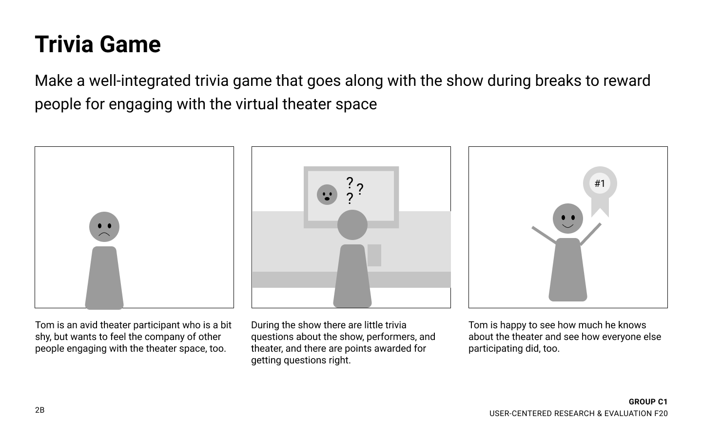
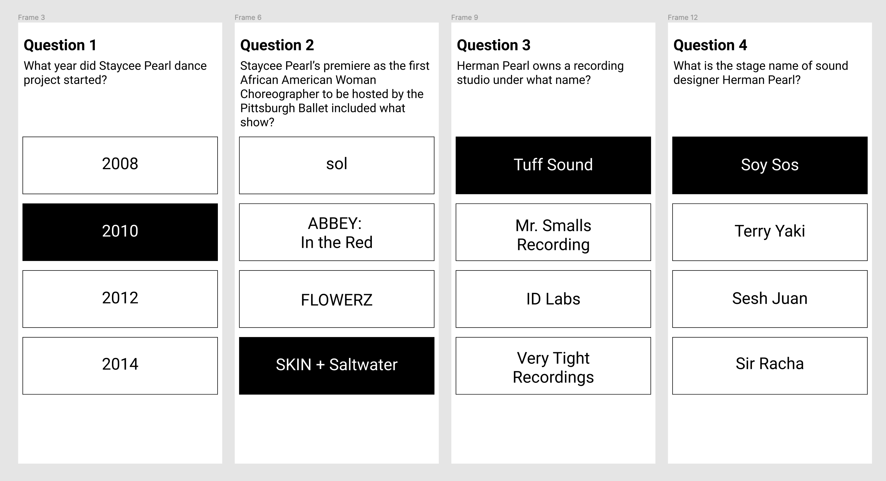
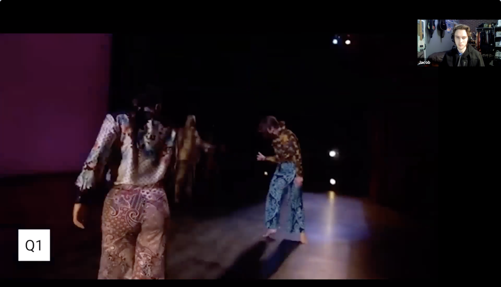

Many theaters are struggling to retain interest as pre-recorded media and streaming services rise in popularity. This is especially prevalent right now, where people can no longer enjoy their favorite theater shows in person. We conducted a many different of user research methods in order to define where the problem lies, how we can help address it, and brainstorm different ideas to increase engagement and interest between the theater show and the audience.
To find opportunities to support KST, we used a variety of research methods, including experience prototyping, competitive analysis, think-aloud study, contextual inquiry, affinity mapping, and speed dating. We also conducted several different research interviews where we got to have primary data in understanding how participants enjoy engaging with media. We wanted to explore possible solutions around this need to connect.


We created storyboards of ideas and evaluated them with potential users through speed dating, where our participants would discuss about the pros and cons of our idea after we talked through it. Afterwards, we selected our idea where we pair a series of trivia questions with the show, and created a low-fidelity experience prototype to test our idea.
During speed dating and experience prototyping, our participants said things like:
- “Knowing more of the backstory of art makes me enjoy it more”
- “Usually I would discuss with friends during and after the show. I usually would head to some website to learn more”.
 
Through the aforementioned evidence, we found that our participants prefer to engage with content that they can enjoy flexibly on their own time. With pre-recorded content, participants also tend to multi-task to enhance their experience, such as eating food. We discovered that participants would seek out ways to engage with others while enjoying media such as screen sharing through various platforms. Therefore, in our own prototype, we felt that an activity that can be somewhat flexible can help increase enjoyment while the user engages with the media.
We ultimately created an experience prototype that displayed discussion questions users can think about on their own, without the need of entering their own answer to verify. This allows for the more flexible insight we discovered previously, as participants do not need to look away from their screen to answer this, but still provided a touch of more thought-provoking engagement with the media.

Our solution to ask thoughtful and engaging questions on pre-recorded content builds upon these natural habits of theater participants. Asking questions about the performance will help facilitate important discussions, which participants will see when they screen share with friends. It can also be enjoyed individually for loyal theater-goers who decide to re-watch performances. In addition, these questions create more opportunities to learn and engage with KST staff and the performers. We believe that our solution will help the theater engage and increase participation with remote participants.